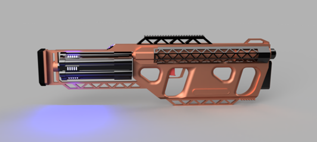

Devlog #1 (18/8/2021)
As you all know, Project Vanguard has recently kick off development! The dev team has been hard at work churning out ideas, concepts, and tests in order to lay out the foundation of the game. Everyone from designers to artists to programmers have been hard at work contributing to the project - which gives us a lot to go over! However, it is important to note that due to the project being in an extremely early stage of development, everything showcased here today is subject to change.
The Final Frontier
First thing’s first, let’s establish the setting. The world of Project Vanguard is set hundreds of years in the future, where humanity has ventured beyond Earth and has established colonies all over the local star cluster. For a time, human civilization prospered on a level never seen before, until the discovery of the bugs.
Human space is comprised of a wide variety of factions, each representing various ideologies and identities. One of the most major factions is the Ecumene, the most powerful and prolific governments of the interstellar era, as well as the oldest. At the time of the campaign, they possess control over the largest amount of human space of any faction. The Ecumene originally emerged as a UN council to oversee human expansion into space. Eventually, as humanity spread out amongst the stars, the council would be assigned governance of all interstellar colonies - and developed into a fully-fledged government after assuming control of Earth’s governments following mass rioting and a series of population crises.
Neighboring the Ecumene are the Free Worlds, a coalition of planetary governments who choose to operate mostly freely of each other unless required. They are the second largest and strongest faction within the local solar cluster. The planets that became the Free Worlds were originally surveyed and explored by private contractors hired by the precursor to the Ecumene. However, as interstellar colonization became more commonplace, these explorers settled on the fringe worlds they studied, allowing them to govern themselves separate from the Ecumene. Only as the two nations developed would they come to rival each other.
The bugs (Bugs is purely a placeholder name, what the writing team wants them to look like and be called has not been determined yet) were the apex predators on their home world. Once first contact was established, human colonists would hunt, capture, and study them, causing them to be hauled from planet to planet. However, once the bugs would reach other human planets, they would adapt and multiply on a level not seen by anything on Earth. Soon, they began to infest various worlds, sparking a half-century long war with the bugs. Only recently has the bug threat been put under control. However, humanity has found itself in a crisis caused by mass death, destruction, and lack of resources - as well as the fervent need to do anything to prevent a second infestation.
In order to combat the bugs, advanced weapons platforms and suits were developed. These weapon platforms are extremely armored and equipped with devastating weaponry. Because of their origins in the Infestation Crisis, some of them are armed with harpoons and chainsaws. Following the infestation crisis, the advanced weapons platforms are now being utilized as walking tanks in planetary combat.
Because of the need to operate both in and around these new mechanized suits, a new breed of ground soldier would need to be developed. This new breakthrough in infantry would come in the form of Vanguard Rangers, the highest rank of the Vanguard Corps. Rangers are the most elite infantry of the interstellar era. They are equipped with the best weaponry, outfitted with the best gear, and armed with the best training humanity has to offer. Chief among their wide sway of equipment - such as active cloaking and infrared sensors - is the jump-pack, an array of advanced jets and boosters attached to the wearer’s lower back and calves. The jump-pack allows rangers to leap further, jump higher, run on walls, jump again in midair, and much more. Rangers are notable for using little armor and protection, but instead using their maneuverability to avoid the brunt of enemy attacks.
To close off the writing section, let’s talk about the campaign! The campaign takes place shortly after the end of the Infestation Crisis, where the Free Worlds and Ecumene have turned against each other due to a variety of crises. Following a recent development in the war, Ecumene High Command has deployed you and your squad to track down, intercept, and take out a dangerous squad of rangers associated with the Free Worlds.
Bringing The Big Guns
Game design has been making some solid strides in establishing the core gameplay concepts for weapons and weapon customization. Much of the game’s arsenal has been laid out, with each weapon role and niche being outlined. Some even have concept art!
Here’s a look at concept art by the honorable F1shy of the EMG Mk4, a close-ranged energy SMG.

The wonderful Jonny has also created a render of the OS1-K, a plasma launcher! 
With weapon customization, we wanted something that provided an in-depth customization system that was simple and easy to understand, but also provides tons of combinations and ways to play. To do this, we came up with a mod system. Each weapon has a various amount of mod slots depending on the weapon type. Mods can be assigned accordingly to these slots. The catch is different mods take up different amounts of mod slots. For example, a tier 1 mod would only take up one slot, while a tier 2 would take up two spaces. Tier 3 mods take up three spaces as you could imagine. However, their benefits are far more unique and powerful than the other two tiers. It is also important to note that not all mods will be universal to all weapons. For example, a shotgun choke would not be able to be put onto an SMG.
Logging Off
We’d like to thank everyone for their patience and help with the project! Even spitballing ideas goes a long way. Everything shown here was just the tip of the iceberg, but we’d like to play our cards close to our chest, so expect many more devlogs to come as we continue to make progress!